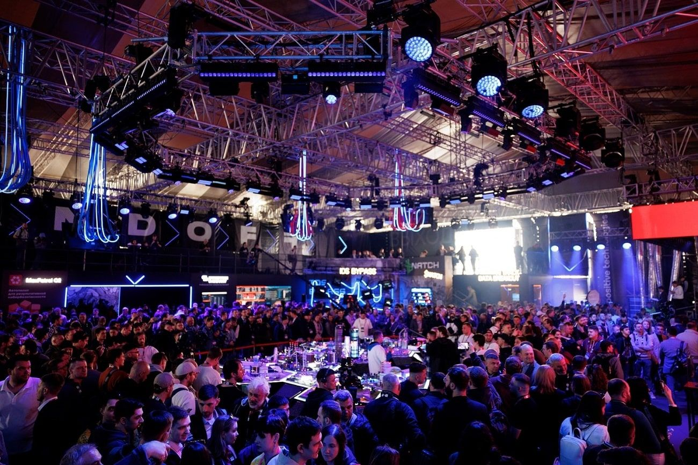

Руководители крупнейших российских компаний поговорили о критически опасных для своего бизнеса последствиях атак на цепочки поставок
Круглый стол «Атаки на цепочку поставок: доверие к сервисам и технологиям в новом мире» прошел 19 мая на фестивале Positive Hack Days 12. В ходе мероприятия представители крупнейших российских компаний обсудили отраслевую специфику таких атак, критически опасные и недопустимые для своих организаций последствия, оценили киберриски взаимодействия с поставщиками и перспективы результативной защиты.
В круглом столе приняли участие вице-президент и директор по информационной безопасности VK Алексей Волков, директор по кибербезопасности медиахолдинга Rambler&Co Евгений Руденко, директор по информационной безопасности Ozon Кирилл Мякишев, технический директор «СДЭК» Павел Куликов и директор экспертного центра безопасности Positive Technologies (PT Expert Security Center, PT ESC) Алексей Новиков.
Отвечая на вопрос об отраслевой специфике атак на цепочки поставок, директор по кибербезопасности Rambler&Co Евгений Руденко отметил, что в контексте интернет-медиахолдингов совершенно недопустима компрометация поставщиков контента, через которых медиа получают и передают данные. Для снижения рисков Rambler&Co создает собственные сервисы. Тем не менее многие интернет-компании все еще полагаются на сторонние ресурсы, что делает определение отраслевой специфики сложной задачей.
Эксперты выделили несколько ключевых моментов в ретроспективе и сделали прогноз относительно атак на цепочки поставок. За последние годы количество таких инцидентов значительно возросло: достаточно вспомнить атаки на государственные учреждения США и сервисы Google, на российские правительственные сайты, компрометацию записей 3,7 миллиона клиентов сети аптек Dis-Chem Pharmacies (ЮАР) из-за взлома стороннего поставщика услуг, атаки на сайты недвижимости через видеоплеер и многие другие.
Рост количества инцидентов подобного рода объясняется тем, что современный интернет становится все более экосистемным: сервисы взаимодействуют друг с другом и предоставляют аналитические и прочие услуги. Интеграция увеличивает риски компрометации через поставщиков. – Евгений Руденко, директор по безопасности медиахолдинга Rambler&Co
Учитывая всплеск хакерской активности последних месяцев, директор экспертного центра Positive Technologies Алексей Новиков прогнозирует дальнейший рост числа атак на цепочки поставок.
Российские компании испытывают повышенное внимание со стороны хакеров, тогда как раньше его можно было назвать точечным: в основном проводились одноступенчатые атаки, к которым организации приспособились. Был выработан спектр простых рекомендаций, которые позволяли избегать подобных инцидентов, хотя утечки в некоторой степени все равно происходили. Сейчас же ситуация изменилась: нападения стали целенаправленными. Хакеры изучают жертву, пробуют разный инструментарий и техники, чтобы достичь желаемого результата. Контрагенты потенциальной жертвы неизбежно попадут в поле зрения злоумышленников, а следовательно, тренд на атаки на цепочки поставок усилится. – Алексей Новиков, директор экспертного центра безопасности Positive Technologies
По мнению технического директора «СДЭК» Павла Куликова, число инцидентов будет расти среди прочего потому, что IоT-сегмент, который интегрируется с аппаратным и программным обеспечением, находится на стадии интенсивного развития.
По словам директора по информационной безопасности Ozon Кирилла Мякишева, бизнес-модель онлайн-торговли привлекает не только новых клиентов и предпринимателей, но и киберпреступников. Возникает необходимость в принятии дополнительных мер для защиты платформ от подобных угроз.
Наши команды ИБ и антифрода постоянно изучают последние публичные случаи кибератак, совершенствуют собственные системы и добавляют новые меры и средства защиты, чтобы обезопасить площадки. – Кирилл Мякишев, директор по информационной безопасности Ozon
Участники дискуссии поделились своим видением последствий атак на сторонних поставщиков, которые могут оказаться недопустимыми для их организаций. Так, Евгений Руденко среди критически опасных последствий назвал имиджевые, отметив, что для снижения риска нужна поддержка со стороны государства и больших игроков рынка.
Необходимо сформировать общие стандарты и сформулировать пул стандартизированных требований зрелости кибербезопасности, которые компании могли бы соблюдать. Например, при принятии решения о сотрудничестве с той или иной организацией можно будет запросить документы и убедиться, что поставщик соблюдает единые требования рынка. Интернет-среда должна регулироваться с точки зрения кибербезопасности. Пока что для проверки уровня зрелости ИБ у нас нет ни законодательной базы, ни ресурсов. – Алексей Новиков, директор экспертного центра безопасности Positive Technologies
Участники круглого стола также дали свои рекомендации по обеспечению защиты от атак на цепочки поставок. В частности, было отмечено, что важно корректно оценивать периметр, где злоумышленники могут получить доступ к инфраструктуре компании.
Любому крупному бизнесу нельзя фокусироваться исключительно на защите критической инфраструктуры, так как доступ к данным можно получить и иными способами, например через подрядчиков и партнеров. – Кирилл Мякишев, директор по информационной безопасности Ozon
Кроме того, директор по информационной безопасности Ozon обратил внимание на важность обучения сотрудников, клиентов и партнеров базовым правилам информационной безопасности: люди должны понимать возможные риски и знать основные меры предосторожности, что позволит им не попасться на уловки мошенников.
Со своей стороны, директор по кибербезопасности медиахолдинга Rambler&Co Евгений Руденко отметил, что сотрудники департаментов ИБ должны участвовать во всех процессах компании, включаться в согласование новых проектов, договоров, архитектуры. Помимо прочего, необходимо сделать рынок цивилизованным и регламентированным, нужны понятные требования государства, которые организации обязаны соблюдать, считает эксперт.
Рассуждая о концепции «абсолютного недоверия» (т.н. 0-trust концепции), директор по информационной безопасности VK Алексей Волков назвал такой подход, при котором самым эффективным способом обеспечения ИБ является одинаковый контроль всех поставщиков и контрагентов компании, изначальное недоверие к каждому звену цепочки правильным.
0-trust должна заработать как концепция, которая поможет обеспечить баланс между интересами безопасности и бизнеса. – Алексей Волков, вице-президент и директор по информационной безопасности VK
В свою очередь Павел Куликов, Алексей Новиков и Евгений Руденко назвали такую концепцию во многом идеальной, не встречающейся в чистом виде, но подчеркнули, что к ней нужно стремиться.
В целом круглый стол на 12-м Positive Hack Days проложил путь для дальнейших обсуждений и разработки стратегий защиты от атак на цепочки поставок. Эксперты отметили важность принятия мер по обеспечению безопасности в экосистеме современного интернета, а также необходимость активного сотрудничества и обмена опытом между компаниями, чтобы сделать цифровой мир более защищенным и надежным для всех пользователей.
Соорганизатором PHDays и Standoff уже третий год выступает IT-компания Innostage, разработчик и интегратор сервисов и решений в области цифровой безопасности. Бизнес-партнерами фестиваля стали разработчик решений для информационной безопасности Security Vision, национальный провайдер сервисов и технологий ИБ «Ростелеком-Солар» и один из крупнейших универсальных банков России Газпромбанк. Генеральный медиапартнер мероприятия — компания VK, а генеральный информационный партнер — Rambler&Co. Информационным партнером деловой части фестиваля стала группа компаний «РБК». Технологический партнер — «Азбука вкуса». Партнеры PHDays 12 и участники выставки — компании Axoft, Fortis, F+ tech, «ICL Cистемные технологии», InfoWatch, MONT, OCS Distribution, UserGate, «Инфосистемы Джет», «Стахановец». Партнеры — ARinteg, Platformix, Росбанк и «УЦСБ». Участник выставки и Standoff — «Газинформсервис».
